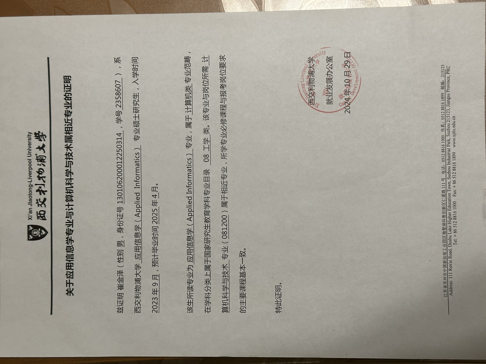
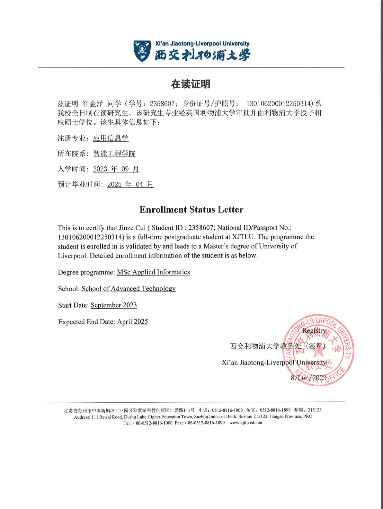
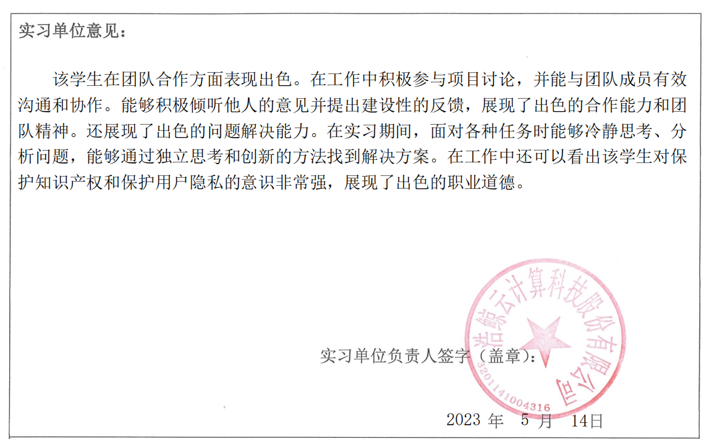
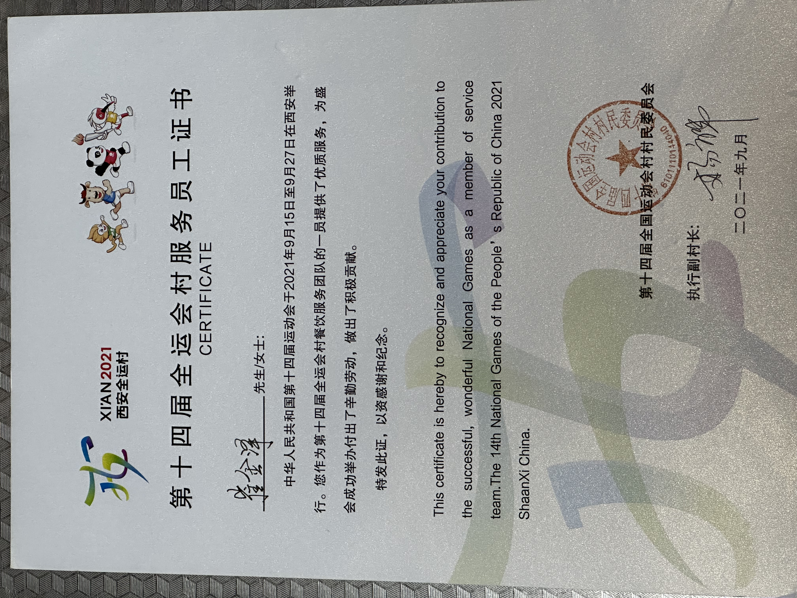
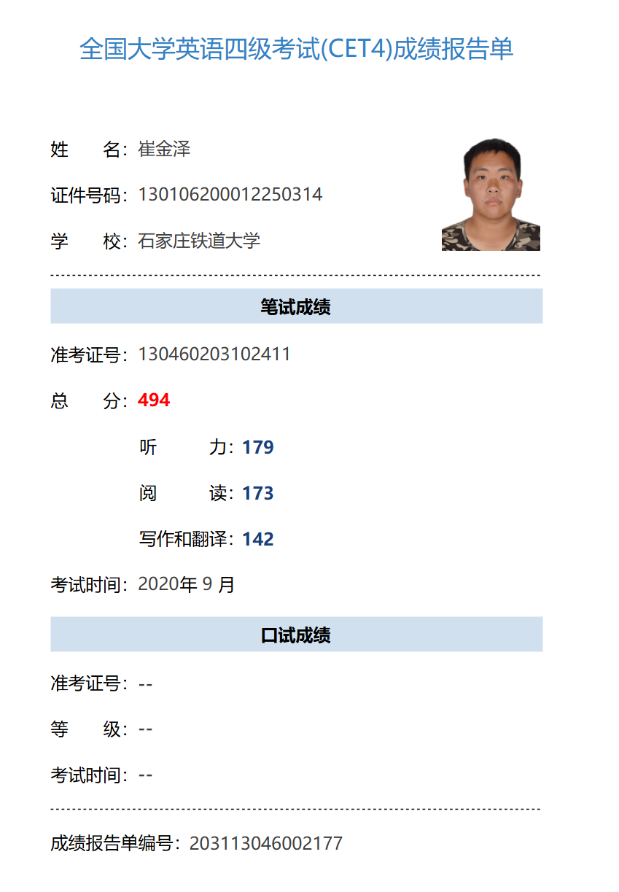
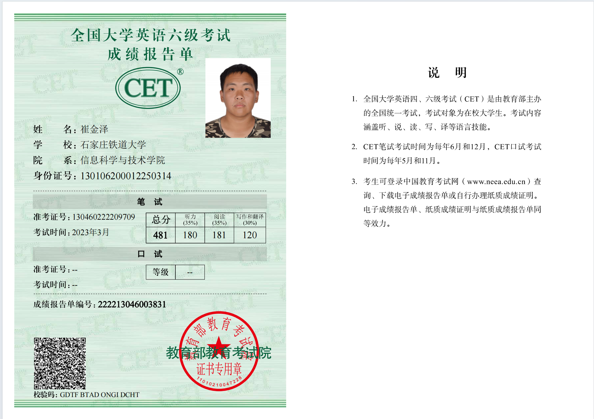
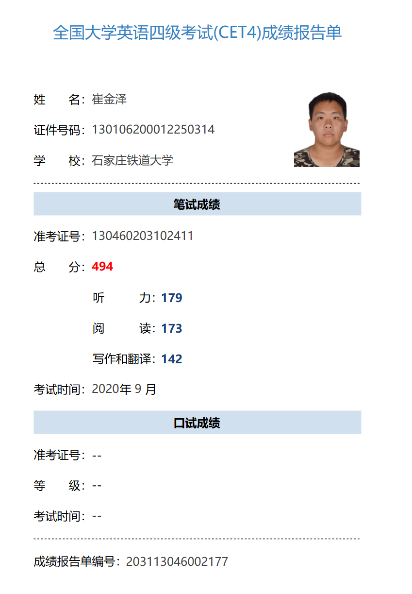
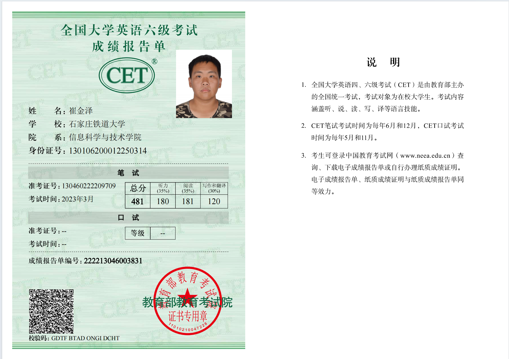
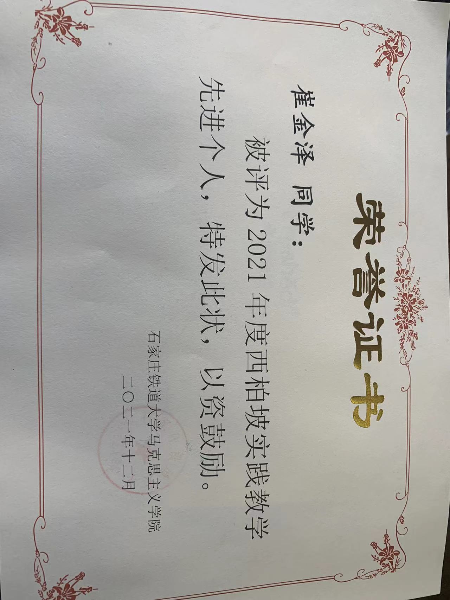
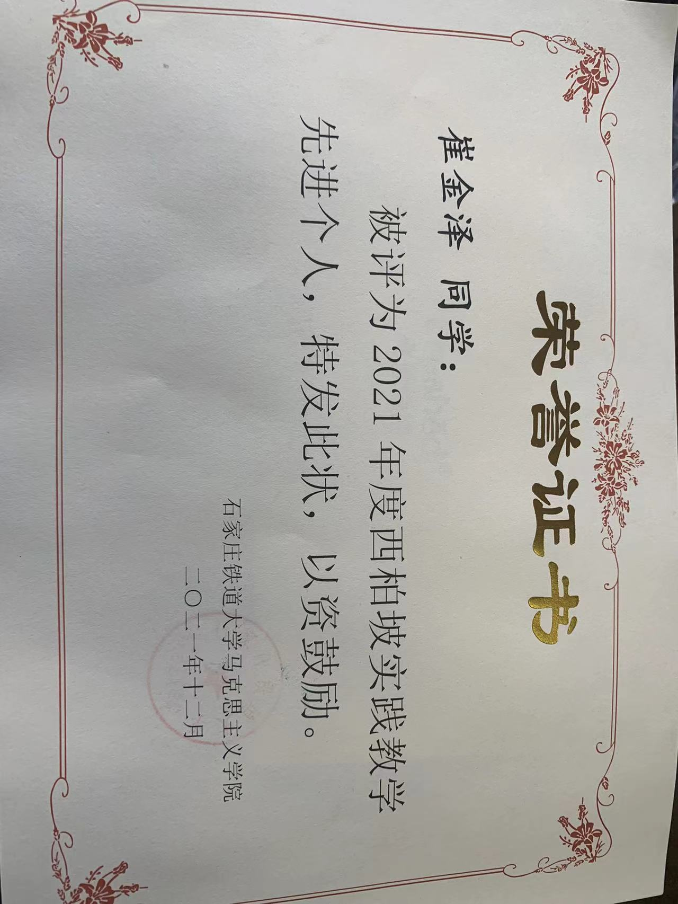

崔金泽
信息技术/石家庄
基本信息
- 崔金泽 / 男 / 24岁
- CET-6
- 硕士研究生
联系方式
技能点
二维码

教育经历
-
西交利物浦大学（XJTLU） - 应用信息学（硕士）
• 平均 GPA: 71.2/100（前20%）
-
石家庄铁道大学 (STDU)-计算机科学与技术（本科）
• 平均 GPA: 85.6/100（前15%）
实习/项目经历
-
浩鲸云计算科技股份有限公司（实习）
- 在实习中了解到了团队合作的重要性，通过团队合作才能完成企业项目，明白了沟通和规范化的重要性。
- 对行业有了更深入的了解。
-
中国大学生计算机设计大赛
- 以“新冠肺炎疫情数据可视化”为主题，以折线图、地图、图形等形式展示不同指标下数据的差异。
- 采用可拖拽时间线对疫情数据进行动态可视化，呈现疫情大数据的内容，丰富疫情数据的呈现。
- 本次比赛获得河北省级三等奖。
- 拥有软件著作权证书，软件名称为“COVID-19 可视化系统”。
-
第十四届全运会村志愿者
- 作为第十四届全运会村餐饮服务团队的一员提供了优质服务。
- 为盛会成功举办付出了辛勤劳动，做出了积极贡献。
-
中国大学生创新创业大赛
- 基于 ArcGIS 平台，利用 C++基本概念和操作、图像处理、滤波、插值和缩放、矩阵和向量运算、优化基础知识构建三维地图模型。
- 项目论文《基于 ArcGIS 的三维地图重建》被《智能系统研究科学杂志》接受。
专利和版权
-
专利:一种计算机总线接口线路保护结构
- 通过设置固定板和安装销，提供计算机总线接口线路保护结构，使连接口线路稳定。
- 减少线路缠绕的可能性，加快线路传输速度，促进线路的正确使用。
-
软件著作权:基于 OpenCV 的答题卡批改系统
- 读取答题纸图像并进行灰度处理，应用高斯模糊对图像进行去噪处理。
- 从背景中分离提取图像的标记矩阵和答题纸上的涂鸦信息。
- 与事先输入的正确答案进行比对。
-
软件著作权:基于 YOLOV5 的建筑工地安全帽检测系统
- 将单个卷积神经网络应用于整个图像，将其划分为网格，并预测每个网格的类别概率和边界框。
- 预测物体出现在边界框中的概率。
- 通过安全帽检测算法确保对操作区域的有效控制。
荣誉、奖学金及奖励
自我评价
作为一名计算机专业的研究生，我在本科和研究生阶段积累了扎实的专业知识，并通过一系列学术研究和项目实践，进一步深化了对计算机科学的理解和应用能力。我热爱这个领域，始终保持对技术的浓厚兴趣和探索精神，并通过不断学习，提升了自己在技术开发和团队合作中的综合能力。
在学术方面，我通过对核心课程的深入学习，掌握了计算机系统、算法设计、数据库管理、人工智能等重要技术。研究生阶段，我结合理论与实践，逐步提升了自己的创新能力和解决复杂问题的能力。此外，我还注重将知识与实践相结合，积极参与实践，在这些实践中锻炼了我的问题分析和解决能力。
我有较强的编程能力和数据结构分析能力，熟悉多种编程语言（如C/C++、Python、Java等），在学习小组中经常担任组长，能够在团队中与他人有效合作，推动项目的进展。我注重细节，善于从整体角度思考问题，能够在压力下保持高效并解决实际工作中的挑战。
在平时的生活中热爱音乐和摄影艺术，有小军鼓9级（满级）证书，喜欢发现平常生活中的美，热爱生活。
我的优势在于快速学习新技术和灵活应对不同技术问题的能力，能够在不同的工作环境中不断成长并做出贡献。作为一个有责任感且具备团队合作精神的人，我希望能够在未来的工作中继续发挥我的专业优势，与团队共同创造价值。
额外信息
研究生应用信息学开设课程：
专业相似说明：
在读证明：
实习：
 英语成绩：
 



竞赛证书：
 
